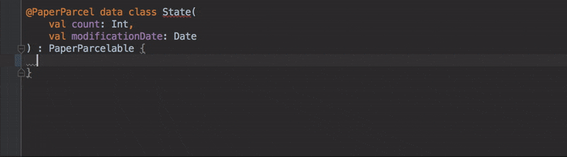

While PaperParcel elimitates the majority of the work involved in creating Parcelable types, it still requires you to manually call the generated code in your model objects. This is fairly repetitive code and is a perfect candidate for Intellij Live Templates. The following steps will help you set up a Live Template for PaperParcel:
- Open Preferences... -> Editor -> Live Templates
- Click "+" under "Android"
- For the 'Abbreviation', I like to use "ppb" (short for "PaperParcel boilerplate"). This is what you'll type to trigger the auto-completion.
- Under "Description", type a message to help you remember what this command does (e.g. "Generates PaperParcel boilerplate")
- Type the following code into the template text:
companion object { @JvmField val CREATOR = PaperParcel$CLASS$.CREATOR }
- Define the "Applicable contexts" to "Kotlin -> Class"
- Click "Edit Variables"
- Under "Expression" for
CLASS_NAME, typekotlinClassName()and tick "Skip if defined". - Apply changes
Now in any kotlin class you should be able to type your abbreviation (e.g. ppb), press tab, and Intellij will fill in the remaining boilerplate like so:
